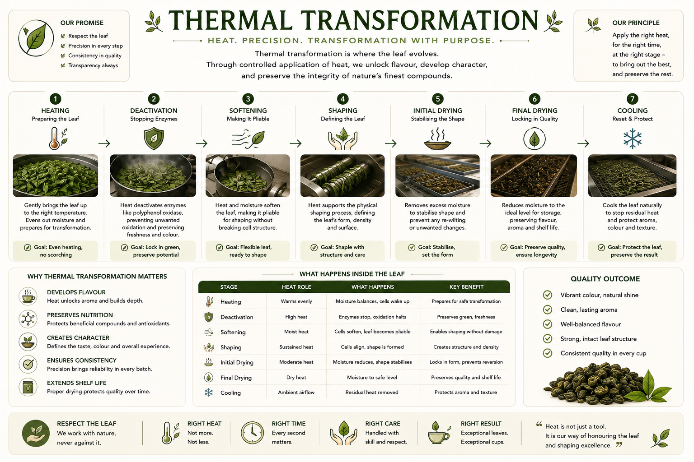

Reference image — Thermal Transformation: Heat, Precision, Transformation with Purpose.
Our Principle
Apply the right heat, for the right time, at the right stage — to bring out the best, and preserve the rest.

The lowest active heat stage — barely moving liquid, with small bubbles forming slowly. Used for the most delicate preparations where aromatic volatiles must be preserved and extraction is intentionally slow. Temperature approximately 70–80°C. Preserves green and floral notes.

Sustained heat at approximately 85–90°C — gentle movement in the liquid, steady extraction without agitation. The standard heat stage for most Buna decoction preparations. Allows compound release over time without the volatility of a full boil.

An active simmer approaching boiling — visible agitation, rapid compound extraction, and beginning concentration through evaporation. Used in preparations where a fuller body and deeper colour are the target. Requires closer attention than a gentle simmer.

Sustained heat that drives off water as steam, concentrating the liquid. Used in syrup making, culinary applications, and concentrate production. Reduction intensifies all flavour compounds — both desirable and undesirable — so quality of the base extraction matters before reduction begins.
See Buna Culinary →
Extended boiling — the characteristic heat method of Engere and Kuti traditions. A long boil in coffee leaf increases sweetness and decreases bitterness, which is the opposite of what extended heat does to conventional tea. This counterintuitive property is one of Buna's defining characteristics.
See Engere →
Allowing the leaf or liquid to return to ambient temperature — stopping residual heat from continuing to transform aroma, colour, and texture. Cooling is an active quality step, not a passive wait. Packaging warm leaf traps steam and degrades quality. Cooling must be complete before sealing.

Gentle dry heat applied to dried leaf — developing early Maillard compounds without pushing into caramelisation. Light roasting produces toast and hay notes, brightens the colour slightly, and increases shelf stability. The leaf remains identifiably green-herbal in character.

Moderate dry heat developing caramel, nutty, and toasted grain notes. Medium roasting produces a visibly darker leaf with a richer aromatic profile. The balance between green character and roasted development makes medium roasting the most versatile thermal treatment for Buna.

High dry heat producing cacao, woody, and smoke-adjacent notes. Dark roasting significantly alters the original leaf character — green and floral notes are largely replaced by roasted compounds. Produces a deeply flavoured, full-bodied cup but requires careful control to avoid bitterness or char.

The boundary condition of dry heat — where roasting tips into charring. Char notes in Buna may be intentional in very specific traditional preparations (some smoked leaf techniques approach this threshold) or may indicate an error in roasting control. Understanding this boundary is essential for consistent quality.
Heat unlocks aroma and builds depth through Maillard reaction and caramelisation. These create compounds not present in the fresh leaf — the roasted, toasty, sweet notes that distinguish processed Buna from raw leaf.
See Sensory — Aroma →Correct thermal processing protects beneficial compounds and antioxidants. The right heat applied correctly is preservation — not destruction. Over-heating degrades the compounds that give Buna its functional character.
Precision in thermal processing brings reliability in every batch. Temperature logs, time records, and moisture measurements are the foundation of batch-to-batch consistency — what makes a café confident in serving Buna.
Proper drying to the correct moisture content protects quality over time. A leaf dried to the right endpoint resists mould, retains aroma, and maintains its compound profile through storage and transport.